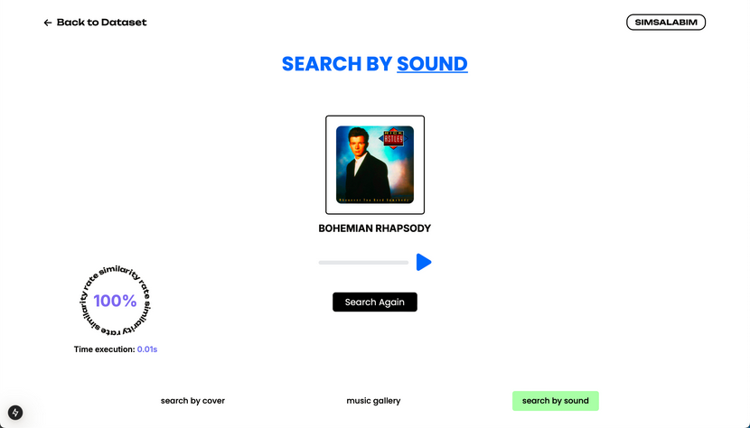
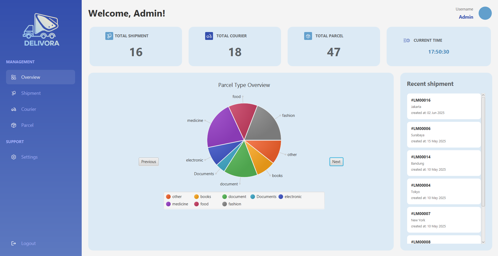

RANASHAHIRA REZTAPUTRI





My name is Ranashahira Reztaputri, but you can call me Rana. I'm an Informatics Engineering student at Institut Teknologi Bandung with a passion for problem-solving and design. I believe that big dreams require hard work and creativity, and my goal is to become a Software Engineer who can create meaningful impact for others.